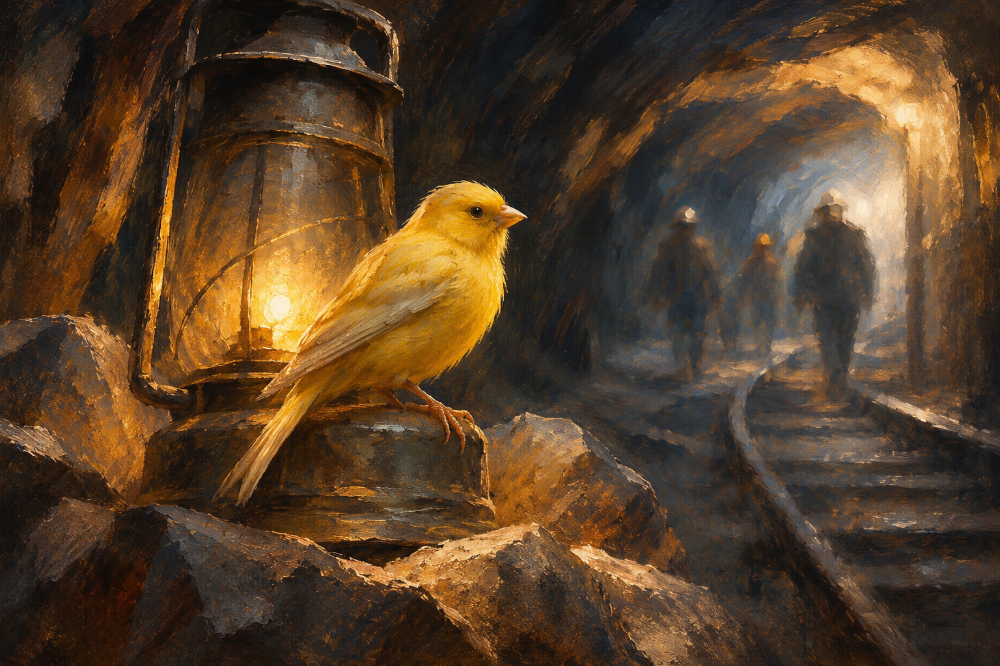
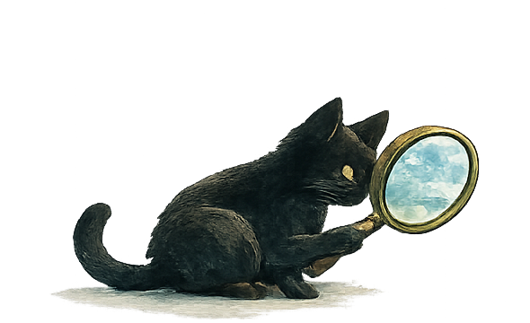
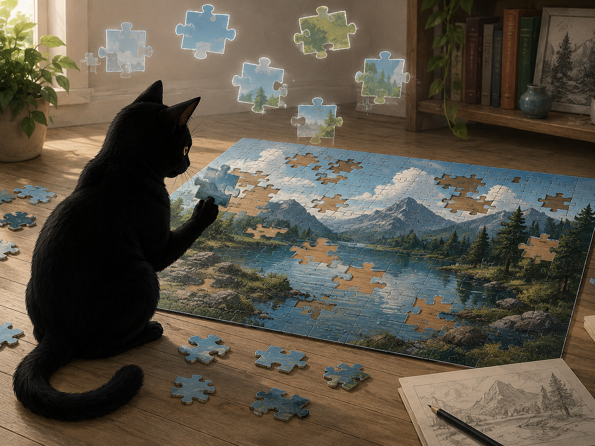
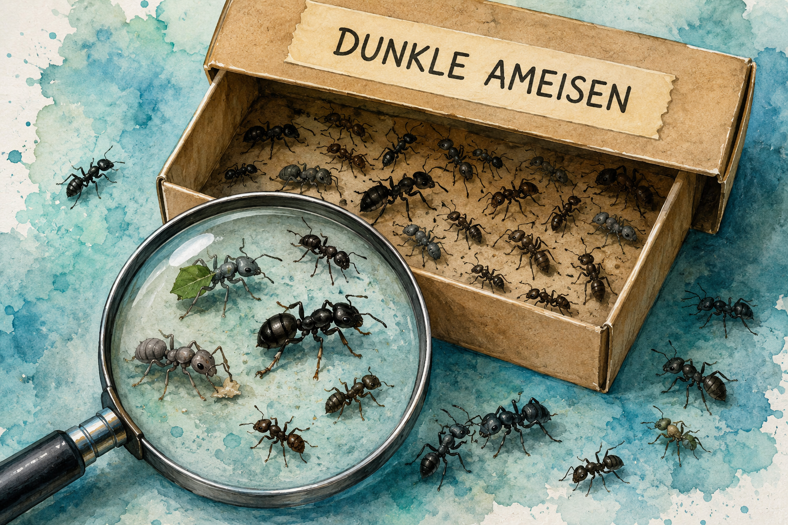

Beobachten
Canary in the Coal Mine
Wenn das System den Kanarienvogel behandelt
Light up Reader
Jede Erkenntnis beginnt mit einer Beobachtung. Nicht alles, was auffällt, muss sofort erklärt werden.

Texte in diesem Raum

Beobachten
Wenn das System den Kanarienvogel behandelt

Beobachten
Wie wir Wirklichkeit aus Fragmenten zusammensetzen

Beobachten
Warum eine richtige Beschriftung trotzdem zu wenig Wahrheit enthalten kann.
Beobachten
Wenn das System den Kanarienvogel behandelt
Früher begleiteten Kanarienvögel die Bergleute in die Kohleschächte. Nicht etwa, weil sie beim Kohleabbau besonders hilfreich gewesen wären, sondern weil sie auf bestimmte giftige Gase empfindlicher reagierten als Menschen.
Wenn der Vogel von der Stange fiel, war das ein Warnsignal. Die Bergleute mussten handeln, bevor ihnen selbst die Luft ausging.
Stellen wir uns nun vor, die Bergwerksleitung hätte anders reagiert.
Sie hätte nicht die Luft untersucht, sondern den Vogel. Ein Gutachten hätte ihm mangelnde Belastbarkeit bescheinigt. Anschließend wären neue Anforderungen an die gesundheitliche Eignung von Kanarienvögeln formuliert worden.
Das Bergwerk hätte weitergearbeitet.
Und die Luft wäre dieselbe geblieben.
Die meisten gesellschaftlichen Institutionen entstehen nicht, um Menschen das Leben schwer zu machen. Schulen sollen Bildung ermöglichen, Verwaltungen öffentliche Aufgaben erfüllen, Krankenhäuser Menschen versorgen. Regeln sorgen dafür, dass nicht alles von Zufall, Willkür oder der Laune einzelner Personen abhängt.
Das ist zunächst ein Fortschritt.
Doch sobald viele Menschen zusammenarbeiten, wird es kompliziert. Ausnahmen müssen beurteilt, Zuständigkeiten geklärt und Verantwortlichkeiten verteilt werden. Zugleich soll verhindert werden, dass vergleichbare Fälle unterschiedlich behandelt werden.
Also entstehen Formulare, Vorschriften und Kontrollverfahren.
Mit jeder neuen Erfahrung lernt das System etwas hinzu. Zumindest wäre das seine Chance.
Manchmal lernt es allerdings vor allem, wie es sich gegen die nächste Unvorhersehbarkeit absichert.
Ein Fehler führt zu einer zusätzlichen Vorschrift. Eine Beschwerde zu einem neuen Beschwerdeverfahren. Ein ungewöhnlicher Fall zu einer weiteren Kategorie. Irgendwann braucht es mehrere Genehmigungen, um etwas zu tun, das ursprünglich ganz selbstverständlich zum Auftrag der Institution gehörte.
Niemand muss diesen Zustand geplant haben.
Er kann entstehen, weil viele Menschen nacheinander vernünftige Entscheidungen treffen, die zusammengenommen etwas hervorbringen, das niemand mehr vernünftig findet.
Besonders deutlich wird das, wenn ein Mensch nicht in die vorgesehenen Abläufe passt.
Ein Kind braucht eine andere Form des Lernens, als die Schule gerade anbieten kann. Ein Patient schildert Beschwerden, die sich nicht ohne Weiteres einordnen lassen. Jemand weist in einer Verwaltung darauf hin, dass ein Verfahren zwar korrekt durchgeführt wurde, aber seinen eigentlichen Zweck verfehlt.
Solche Fälle sind anstrengend. Sie verlangen Aufmerksamkeit, Zeit und manchmal die Bereitschaft, eine bisherige Entscheidung infrage zu stellen.
Ein lernfähiges System fragt: Was zeigt uns dieser Fall über unsere bisherigen Annahmen?
Ein starres System fragt: Wie bringen wir diesen Fall in unsere vorhandene Ordnung?
Das klingt zunächst ähnlich. Tatsächlich liegt ein erheblicher Unterschied dazwischen.
Im ersten Fall darf die Wirklichkeit das Verfahren verändern.
Im zweiten soll sich die Wirklichkeit dem Verfahren anpassen.
Natürlich kann nicht jede Ausnahme zur neuen Regel werden. Nicht jede Beschwerde ist berechtigt, nicht jede Kritik zutreffend. Aber eine Institution, die diese Möglichkeit nicht mehr ernsthaft prüft, verliert etwas Entscheidendes: die Fähigkeit, an der Wirklichkeit zu lernen.
Kontrolle ist nicht grundsätzlich schlecht. Sie kann Macht begrenzen, Missbrauch verhindern und Menschen schützen. Ohne sie wären viele Institutionen kaum zuverlässig.
Aber Kontrolle hat eine merkwürdige Eigenschaft: Sie lässt sich leichter dokumentieren als Vertrauen.
Ob ein Formular vollständig ausgefüllt wurde, kann man überprüfen. Ob sich ein Mensch tatsächlich verstanden fühlt, ist schwieriger festzustellen. Man kann zählen, wie viele Vorgänge abgeschlossen wurden. Ob dabei das ursprüngliche Problem gelöst wurde, ist eine andere Frage.
So verschiebt sich allmählich, woran eine Institution ihren Erfolg misst.
Nicht mehr: Haben wir den Menschen geholfen?
Sondern: Haben wir das Verfahren eingehalten?
Beides muss sich nicht widersprechen. Gefährlich wird es dort, wo die zweite Frage die erste ersetzt.
Dann kann eine Entscheidung formal korrekt und zugleich offenkundig unpassend sein. Wer auf diesen Widerspruch hinweist, bekommt erklärt, weshalb die Entscheidung trotzdem nicht geändert werden kann.
Die Begründung verweist auf Zuständigkeiten, Fristen, Vorschriften oder bereits abgeschlossene Prüfungen.
Am Ende ist alles ordnungsgemäß dokumentiert.
Nur das Problem besteht weiterhin.
Wir sprechen häufig darüber, wie effizient unsere Gesellschaft geworden ist. Wie viele Aufgaben sich automatisieren lassen, wie Verfahren standardisiert und Entscheidungen beschleunigt werden können.
Seltener fragen wir, wie es sich anfühlt, innerhalb dieser Verfahren zu leben.
Menschen verbringen Zeit damit, ihre Anliegen verständlich zu machen, dieselben Informationen erneut einzureichen und Entscheidungen nachzuvollziehen, für die sich niemand persönlich verantwortlich fühlt.
Besonders zermürbend wird es, wenn jemand zwar angehört wird, seine Rückmeldung aber nichts verändern kann.
An dieser Stelle lohnt sich auch ein Blick auf die Entwicklung von Glück und Lebenszufriedenheit.
Unzufriedenheit lässt sich nicht einfach auf Bürokratie oder institutionelle Starrheit zurückführen. Wirtschaftliche Sicherheit, Beziehungen, Gesundheit und gesellschaftliche Erwartungen spielen ebenfalls eine Rolle.
Dennoch drängt sich eine Frage auf: Wenn unsere gesellschaftlichen Systeme über Jahrzehnte immer ausgefeilter werden, erleben die Menschen diese Entwicklung auch als Verbesserung ihres Lebens?
Und falls nicht – was genau haben wir verbessert?
Die Qualität einer Institution zeigt sich nicht allein daran, wie gut sie funktioniert, solange alles nach Plan verläuft.
Entscheidend ist auch, was geschieht, wenn etwas nicht nach Plan verläuft.
Eine Entscheidung muss überprüfbar sein, ohne dass die betroffene Person zunächst beweisen muss, dass sie überhaupt ein Problem haben darf. Mitarbeitende müssen auf Widersprüche hinweisen können. Und Verfahren müssen veränderbar bleiben, wenn sich zeigt, dass sie ihren Zweck verfehlen.
Sonst wird die Erklärung eines Verfahrens irgendwann wichtiger als seine Überprüfung.
Eine Institution muss nicht jede Kritik übernehmen, um korrigierbar zu sein. Sie muss aber zulassen, dass Kritik etwas verändern kann.
Das ist ein kleiner Unterschied mit weitreichenden Folgen.
Denn wo diese Möglichkeit verschwindet, wird aus Stabilität Starrheit. Aus Verlässlichkeit wird Unbeweglichkeit. Und aus dem Schutz vor Willkür kann eine Ordnung entstehen, in der niemand mehr von den vorgesehenen Abläufen abweichen darf – selbst dann nicht, wenn sie erkennbar versagen.
Unser Kanarienvogel liegt noch immer auf dem Boden.
Die Luft könnte tatsächlich schlecht sein. Der Vogel könnte krank sein. Auch andere Ursachen kommen infrage.
Ein verantwortungsvoller Bergmann würde versuchen, das herauszufinden.
Er würde jedenfalls nicht allein deshalb auf gute Luft schließen, weil sich der Vogel nach einem Gutachten aus dem Bergwerk entfernen lässt.
Genau darin liegt eine entscheidende Frage für unsere gesellschaftlichen Institutionen:
Sind unsere Systeme noch in der Lage, Warnsignale zu verstehen – oder werden sie inzwischen vor allem darin besser, mit den Warnenden umzugehen?
Beobachten
Wie wir Wirklichkeit aus Fragmenten zusammensetzen
Die meisten von uns erleben nur einen kleinen Ausschnitt der Welt unmittelbar.
Wir waren nicht bei historischen Ereignissen dabei. Wir haben nicht jedes Land bereist, nicht jede Krankheit erlebt, nicht jeden Beruf ausgeübt und nicht jede Lebensrealität kennengelernt. Trotzdem besitzen wir erstaunlich konkrete Vorstellungen davon, wie die Welt aussieht.
Woher kommen diese Vorstellungen?
Ein Teil entsteht aus eigenen Erfahrungen. Ein anderer Teil aus Erzählungen. Aus Büchern, Filmen, Nachrichten, Dokumentationen, sozialen Medien und Gesprächen mit anderen Menschen.
Daran ist zunächst nichts Besonderes. Niemand kann alles selbst erleben.
Der entscheidende Moment kommt später.
Wer eine Fremdsprache lernt, kennt das Phänomen vielleicht. Man liest einen Satz, versteht nicht jedes einzelne Wort und glaubt dennoch, den Inhalt verstanden zu haben. Das Gehirn ergänzt die fehlenden Informationen aus dem Zusammenhang heraus. Oft funktioniert das erstaunlich gut.
Manchmal jedoch stellt sich später heraus, dass ein einziges unbekanntes Wort die Bedeutung des gesamten Satzes verändert hat.
Unser Bild von der Welt entsteht auf ähnliche Weise.
Auch hier verfügen wir meist nur über Fragmente. Ausschnitte. Einzelne Bilder. Kurze Berichte. Persönliche Erfahrungen. Das Gehirn verbindet diese Fragmente zu einem Gesamtbild und füllt die Lücken dazwischen selbstständig auf.
Das Problem besteht nicht darin, dass wir Lücken füllen.
Das Problem beginnt dort, wo wir vergessen, dass es Lücken gibt.
Medien spielen dabei eine besondere Rolle. Sie zeigen uns nicht die Wirklichkeit selbst. Sie zeigen Ausschnitte von Wirklichkeit. Jede Nachricht, jede Dokumentation und jeder Film muss auswählen, was gezeigt wird und was nicht. Bereits diese Auswahl verändert die Wahrnehmung.
Hinzu kommt die Logik der Aufmerksamkeit.
Geschichten benötigen Konflikte. Filme brauchen Spannung. Nachrichten berichten bevorzugt über das Außergewöhnliche. Extreme Ereignisse erzeugen mehr Aufmerksamkeit als alltägliche Erfahrungen.
So entsteht leicht ein verzerrtes Bild.
In Filmen erleben wir dramatische Geburten, aber selten die langen Stunden des Wartens. Wir sehen die große Liebe oder die spektakuläre Trennung, aber kaum die vielen kleinen Entscheidungen, aus denen Beziehungen bestehen. Kinder erscheinen als Engel oder als Katastrophe, selten als das, was die meisten Kinder tatsächlich sind: Menschen mit guten und schlechten Tagen.
Die Wirklichkeit verschwindet dadurch nicht.
Aber sie rückt in den Hintergrund.
Mit der Zeit kann der Eindruck entstehen, die Welt bestehe hauptsächlich aus Extremen.
Eine der größten Herausforderungen unserer Zeit liegt daher nicht in der Frage, ob Medien lügen.
Sie liegt in der Fähigkeit, zwischen Wirklichkeit und Darstellung zu unterscheiden.
Denn jede Darstellung ist eine Oberfläche.
Und Oberflächen sind nicht bedeutungslos.
Aber sie sind selten das Ganze.
Wer verstehen möchte, was sich unter der Wasseroberfläche befindet, muss bereit sein, tiefer zu schauen.
Nicht alles, was sichtbar ist, ist wichtig.
Und nicht alles, was wichtig ist, wird sichtbar.
Beobachten
Was erwartet uns, wenn wir die Schachtel öffnen?
Stellen wir uns eine Schachtel vor.
Auf ihr steht:
„Dunkle Ameisen“
Eine einfache Beschreibung. Eine praktische Ordnungshilfe. Schließlich kann niemand jede einzelne Ameise betrachten, bevor er die Schachtel öffnet.
Also vertrauen wir dem Etikett.
Von außen wirkt alles eindeutig.
Doch was geschieht, wenn wir die Schachtel öffnen?
Plötzlich entdecken wir Unterschiede.
Schwarze Ameisen. Dunkelgraue Ameisen. Anthrazitfarbene Ameisen.
Große Ameisen. Kleine Ameisen.
Schnelle Ameisen. Langsame Ameisen.
Die Beschriftung war nicht falsch.
Aber sie war unvollständig.
Sie hat etwas Wahres gesagt, ohne die ganze Wahrheit zu erzählen.
Daran ist zunächst nichts Besonderes.
Unser Gehirn arbeitet ständig auf diese Weise. Die Welt ist zu komplex, um jedes Detail einzeln zu betrachten. Deshalb bilden wir Kategorien. Wir unterscheiden zwischen Tag und Nacht, Wald und Wiese, Hund und Katze. Kategorien helfen uns, uns zu orientieren.
Das Problem beginnt nicht mit der Kategorie.
Das Problem beginnt mit dem, was wir daraus machen.
Nehmen wir an, einige der dunkelgrauen Ameisen in unserer Schachtel verhalten sich aggressiv. Sie beißen häufiger als andere oder verteidigen ihr Nest besonders energisch.
Aus einer einzelnen Beobachtung entsteht nun eine Vermutung.
Aus mehreren Beobachtungen entsteht eine Verallgemeinerung.
Und irgendwann sagt jemand:
„Dunkle Ameisen sind aggressiv.“
Was zunächst wie eine harmlose Vereinfachung erscheint, verändert den Blick auf jede einzelne Ameise in der Schachtel.
Die schwarzen Ameisen werden nicht mehr als schwarze Ameisen gesehen.
Die friedlichen Ameisen werden nicht mehr als friedliche Ameisen gesehen.
Alle verschwinden hinter einem gemeinsamen Etikett.
Plötzlich ist nicht mehr das Individuum entscheidend, sondern die Kategorie.
Genau hier entstehen viele Vorurteile.
Nicht nur gegenüber Ameisen.
Auch gegenüber Menschen.
Wir begegnen einem Einzelnen und schließen auf Viele.
Wir machen Erfahrungen mit Individuen und übertragen sie auf ganze Gruppen.
Wir sehen eine Eigenschaft und behandeln sie, als sei sie ein Wesensmerkmal.
Dabei besteht die Wirklichkeit selten aus Schubladen.
Sie besteht aus Menschen.
Aus Individuen.
Aus Geschichten.
Aus Erfahrungen.
Aus Widersprüchen.
Kein Mensch passt vollständig in die Kategorien, die wir ihm zuschreiben. Nicht seine Herkunft. Nicht seine Hautfarbe. Nicht sein Geschlecht. Nicht seine Religion. Nicht sein Beruf. Nicht einmal seine Nationalität erzählt die ganze Geschichte.
Kategorien können hilfreich sein.
Sie helfen uns, die Welt zu ordnen.
Doch sobald wir vergessen, dass sie Vereinfachungen sind, werden sie gefährlich.
Denn dann beginnen wir, Menschen nicht mehr als Menschen zu betrachten.
Wir sehen nur noch das Etikett.
Die eigentliche Herausforderung besteht nicht darin, alle Kategorien abzuschaffen.
Sie besteht darin, sich immer wieder bewusst zu machen, dass zwischen dem Etikett auf der Schachtel und dem, was sich darin befindet, ein Unterschied besteht.
Wer genauer hinsieht, entdeckt etwas Erstaunliches:
Je näher wir einem Menschen kommen, desto weniger passt er in die Schublade, in die wir ihn zuvor gesteckt hatten.
Das ist kein Fehler.
Es ist ein Hinweis darauf, wie Wirklichkeit beschaffen ist.